| Parte | O que este PDF mostra | Peso |
|---|---|---|
| 1. Arquitetura final | o diagrama final, os componentes, a integração e o fluxo de dados | 15% |
| 2. Execução da plataforma | como roda, exemplo de entrada e saída, números e prints | 20% |
| 3. Pipeline DevSecOps | as cinco etapas, qualidade, vulnerabilidades e o que o pipeline achou | 20% |
| 4. Monitoramento | o que é acompanhado, como cada peça é julgada e como acompanhar | 10% |
| 5. Análise de processo e demonstração | o event log, o processo descoberto, variantes, gargalos, melhorias e o vídeo | 25% |
| 6. Pitch e visão de produto | o vídeo pitch | 10% |
| Uso de IA, créditos e o que é simulado | o que foi usado para construir e quem fez o quê |
A plataforma da Sprint 6 continua a mesma no centro: estações simuladas publicam leituras num broker MQTT, um worker grava e avalia cada talhão de hora em hora, e o painel mostra as decisões. A Sprint 7 acrescenta uma sexta camada, a de operação: o pipeline DevSecOps que prova cada versão, o monitoramento que diz se o sistema está de pé e o event log que permite estudar o processo com o pm4py.
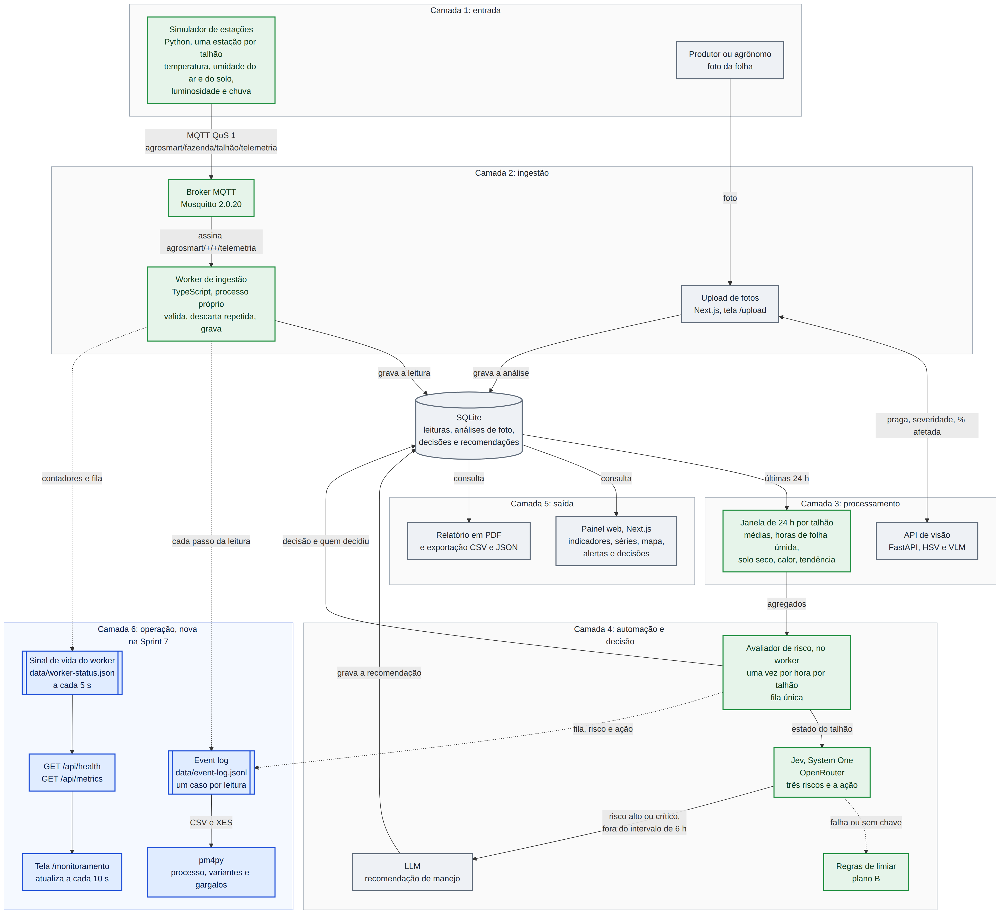
docs/fase-7/diagrams/01-fluxo-final.mmd.agrosmart/{fazenda}/{talhão}/telemetria (QoS 1). O produtor também envia fotos de folhas pela tela /upload.agrosmart/+/+/telemetria, valida a mensagem, descarta a leitura repetida pela chave (talhão, instante) e grava no SQLite./api/health, o /api/metrics e a tela /monitoramento leem esse estado; o pm4py desenha o processo real a partir do event log.| Componente | Camada | Responsabilidade | Tecnologia | Origem |
|---|---|---|---|---|
| Simulador de estações | Entrada | leituras plausíveis por talhão, com relógio simulado | Python, paho-mqtt | Sprint 6 |
| Upload de fotos | Entrada | recebe a foto e registra a auditoria | Next.js | fases 2 e 4 |
| Broker MQTT | Ingestão | separa quem publica de quem consome | Mosquitto 2.0.20 | Sprint 6 |
| Worker de ingestão | Ingestão | valida, descarta repetida e grava; processo próprio | TypeScript (Node), Drizzle | Sprint 6 |
| API de visão | Processamento | área afetada (HSV) e praga (modelo de visão) | FastAPI, OpenCV | fases 1 a 3 |
| Avaliador de risco | Automação | fila por hora, janela de 24 h, chama o Jev e grava a decisão | TypeScript | Sprint 6 |
| Jev e regras de limiar | Automação | três riscos e a ação; regras como plano B | OpenRouter; TypeScript | Sprint 6 |
| LLM de recomendação | Automação | recomendação de manejo, sem produto nem dose | OpenRouter | fase 5 |
| Banco de dados | Armazenamento | fazendas, talhões, fotos, leituras, decisões | SQLite (WAL), Drizzle | fase 2 |
| Painel web e proxy | Saída | painéis, relatório, exportação; HTTPS na borda | Next.js 16, React 19; Caddy 2 | fase 2 |
| Event log | Operação | um evento por passo de cada leitura | JSONL gravado pelo worker | Sprint 7 |
| Sinal de vida do worker | Operação | contadores, fila e erros a cada 5 s; linha [monitor] por minuto | JSON ao lado do banco | Sprint 7 |
| Health, metrics e tela | Operação | estado de cada peça e indicadores | rotas e tela do Next.js | Sprint 7 |
| Mineração de processos | Operação | processo, conformidade, variantes e gargalos | pm4py, pandas, Graphviz | Sprint 7 |
| Pipeline DevSecOps | Operação | build, testes, qualidade, imagens, vulnerabilidades, execução | GitHub Actions, Jenkinsfile, SonarQube 10.6, Trivy 0.62 | Sprint 7 |
| De | Para | Como | O que passa |
|---|---|---|---|
| Simulador | Broker | MQTT, porta 1883, QoS 1 | um JSON por estação a cada 15 min simulados |
| Broker | Worker | assinatura agrosmart/+/+/telemetria | a mesma mensagem, de todos os talhões |
| Worker | Banco | Drizzle sobre SQLite | leitura, decisão e recomendação |
| Worker | OpenRouter | HTTPS | estado do talhão ao Jev; pedido de recomendação ao LLM |
| App web | API de visão | HTTP /analyze e /classify | a foto; volta praga, severidade e área afetada |
| Worker | App web | arquivos na pasta do banco | worker-status.json e event-log.jsonl |
| App web | Broker | conexão TCP, até 1 s | só para saber se o broker está de pé |
| Ferramenta externa | App web | GET /api/health, GET /api/metrics | estado e indicadores em JSON |
O worker e o app web não se chamam diretamente: dividem o banco e a pasta de dados, e um pode reiniciar sem derrubar o outro. O estilo é uma arquitetura baseada em serviços: um núcleo em monólito modular (o app web) cercado por serviços satélites (API de visão, broker e worker). O monitoramento entrou como módulo do núcleo, e não como serviço novo.
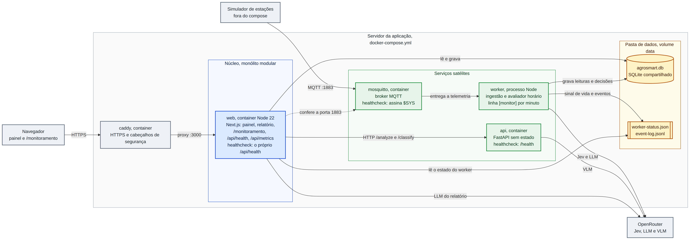
docker-compose.yml (web, API, Mosquitto e Caddy, cada um com healthcheck), o worker como processo à parte e a pasta de dados compartilhada.docker-compose.yml; em produção, ele viraria um serviço do compose com o volume data, para o monitoramento continuar lendo o sinal de vida.Como roda. Na máquina de quem testa, cd web && bun install && bun run demo sobe o broker MQTT (Docker), o banco, o worker com o avaliador, o app web e o simulador, e abre o painel. No pipeline, a etapa 5 faz o mesmo a cada push, sem ninguém olhar: publica 24 horas de histórico e 12 horas ao vivo (aceleradas, com semente fixa), confere que as leituras viraram decisões, sobe o app de produção, guarda o /api/health e o /api/metrics e fotografa as telas.
/api/health respondeu ok nos cinco componentes.Mensagem publicada no tópico agrosmart/seed:fazenda-gama/seed:gama-talhao-2/telemetria:
{"station_id": "est-gama-talhao-2", "ts": 1795347540000, "temperature_c": 23.5,
"air_humidity_pct": 73.0, "soil_moisture_pct": 31.5, "luminosity_lux": 36649, "event": null}
Decisão gravada para a Fazenda Beta, Talhão 1 (execução 44963951873):
| Campo | Valor |
|---|---|
| Janela avaliada | 24 horas, 96 leituras |
| Temperatura | mínima 22,2 °C, média 29,7 °C, máxima 36,7 °C (9,8 horas acima de 32 °C) |
| Umidade do solo | média 15,4%, última 15%, 24 horas abaixo de 20% |
| Última foto do talhão | mancha parda, 27,59% da folha afetada |
| Riscos | doença fúngica baixo, falta de água crítico, calor crítico |
| Ação e quem decidiu | irrigar, pelas regras de limiar (plano B) |
O estado do worker no fim da execução (worker-status.json), lido pelo monitoramento:
{"brokerConnected": true, "messages": 1008, "stored": 1008, "duplicates": 0, "discarded": 0,
"evaluations": 84, "errors": 0, "queue": 0, "avgEvaluationMs": 28}
A demo também foi rodada pelo README numa máquina do grupo, no Windows com Git Bash (sem WSL2), em 24/11/2026. Na primeira tentativa, travou na conferência de requisitos: o demo.sh escolhe o python3 primeiro, e no Windows esse comando é o atalho da Microsoft Store, que não roda Python. Com um Python de verdade no PATH, subiu tudo: as cinco etapas, as telas e o /api/health responderam, e as primeiras decisões saíram em uns 2 minutos, pelas regras (sem a chave da OpenRouter). Os prints estão em docs/fase-7/prints/demo-local/.
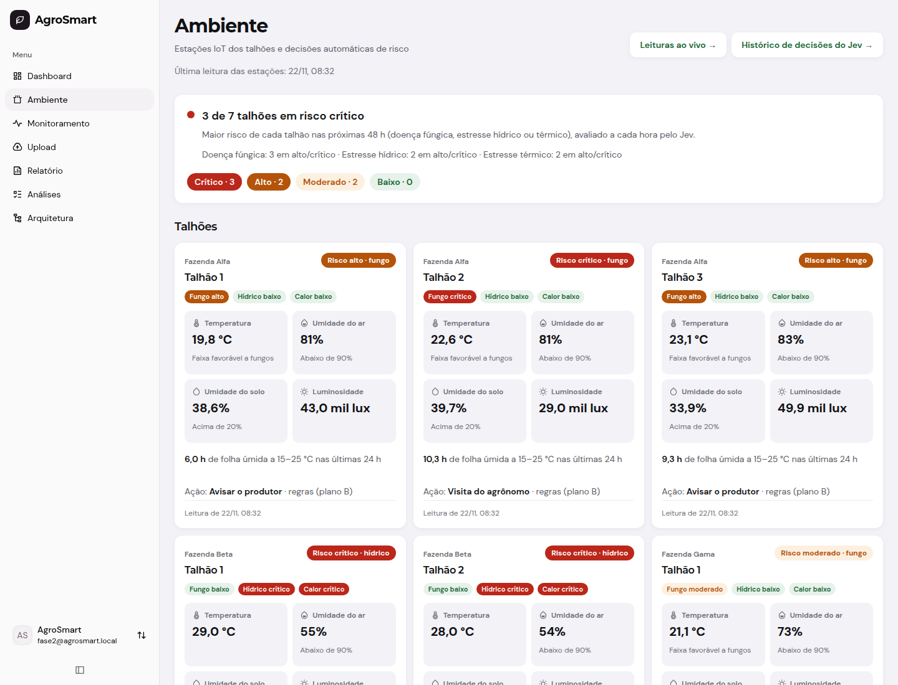
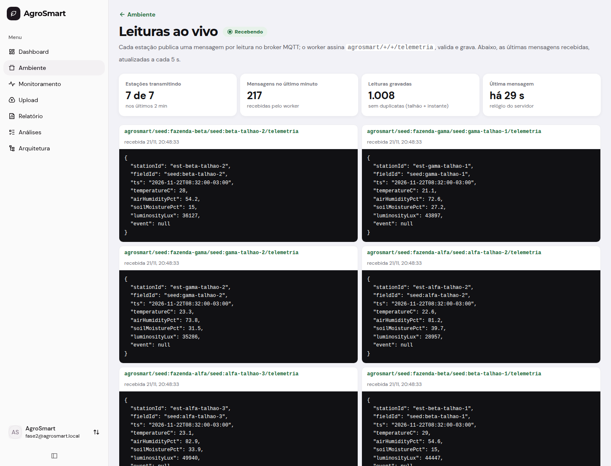
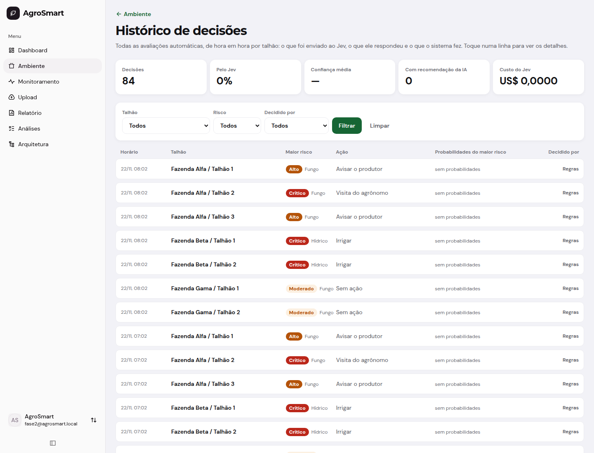
A cada push na main, o GitHub Actions roda cinco etapas, na ordem que o capítulo 10 ensina. O mesmo pipeline está no Jenkinsfile, com o laboratório do capítulo (Jenkins e SonarQube) em devsecops/docker-compose.yml.
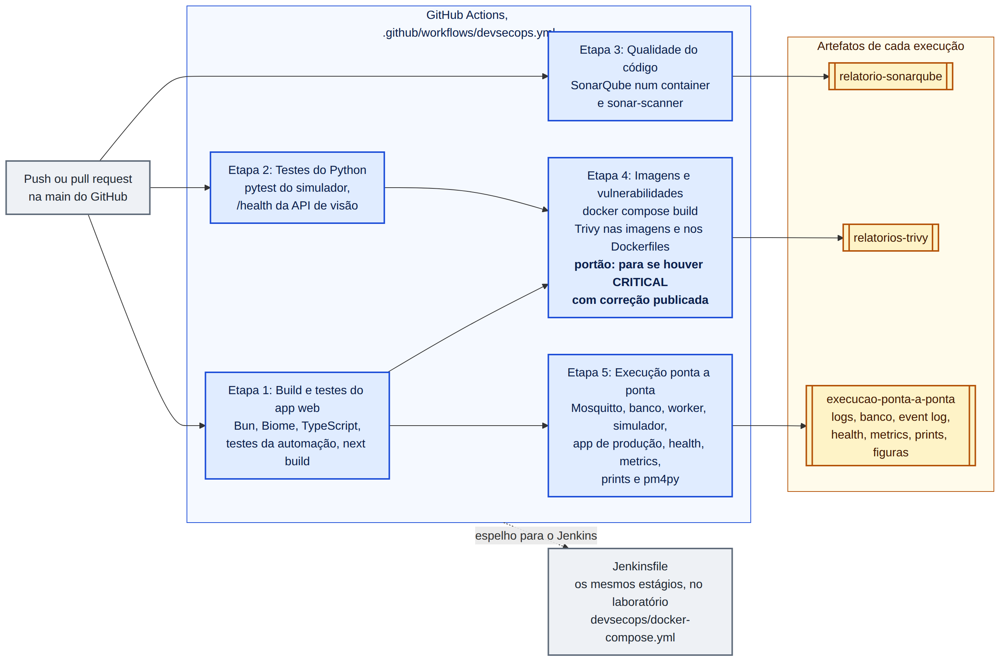
Arquivos de configuração: .github/workflows/devsecops.yml, Jenkinsfile, web/Dockerfile, api/Dockerfile, docker-compose.yml, devsecops/docker-compose.yml, sonar-project.properties e os resumos em devsecops/*.py.
| Etapa | O que faz | Ferramenta | Para se |
|---|---|---|---|
| 1. Build e testes do app web | dependências pelo lockfile, lint, tipos, testes da automação, build de produção | Bun, Biome, TypeScript, Next.js | erro de lint, tipo, teste ou build |
| 2. Testes do Python | testa o simulador; a API de visão sobe e responde ao /health | pytest, FastAPI | teste vermelho ou API que não sobe |
| 3. Qualidade do código | SonarQube num container dentro do job; analisa web, worker, API e simulador | SonarQube, sonar-scanner | a análise não terminar |
| 4. Containers e vulnerabilidades | monta as imagens da web e da API e passa o Trivy nelas e nos Dockerfiles | Docker Compose, Trivy | imagem que não monta ou CRITICAL com correção |
| 5. Execução ponta a ponta | sobe broker, banco, worker, simulador e app; confere entrada e saída; monitoramento, prints e pm4py | Mosquitto, Node, Python, Chrome | menos de 100 leituras ou de 10 decisões; health fora |
Segurança dentro do pipeline: a senha e a chave do SonarQube nascem no job e morrem com ele; o pipeline só lê o repositório; versões de imagens fixas; lockfile congelado.
Qualidade (SonarQube): Quality Gate OK; 13.247 linhas analisadas; 0 bugs e 0 vulnerabilidades; nota A de confiabilidade, segurança e manutenibilidade; 87 code smells; 4,4% de linhas duplicadas; 4 pontos sensíveis para revisar (expressões regulares).
| Alvo (Trivy) | CRITICAL antes | CRITICAL depois | CRITICAL com correção | HIGH com correção |
|---|---|---|---|---|
| Imagem da API | 6 | 1 | 0 | 3 |
| Imagem da web | 6 | 1 | 0 | 0 |
| Dockerfiles (configuração) | 0 falhas | 0 falhas |
A CRITICAL que sobra em cada imagem é do Debian (libxml2 e zlib) e ainda não tem correção; os 3 HIGH da API são do Starlette e pedem atualizar o FastAPI.
| Achado | Etapa | Correção |
|---|---|---|
| 15 erros de lint no código herdado | 1 | corrigidos; a área de upload abre com Enter e espaço |
A imagem Docker da web da Sprint 6 nunca montava (o better-sqlite3 precisa de compilador) | 4 | imagem em Node 22 Debian, sem root, com healthcheck |
| 10 CRITICAL com correção (Pillow e Next.js) | 4 | Pillow 13.0.0, Next.js 16.4.6, Debian atualizado, npm fora da imagem final |
| HIGH com correção no python-multipart e no sharp | 4 | python-multipart 0.0.30 e sharp 0.35.5 |
| O worker só decide nas leituras ao vivo | 5 | o ensaio publica 24 h de histórico e 12 h ao vivo |
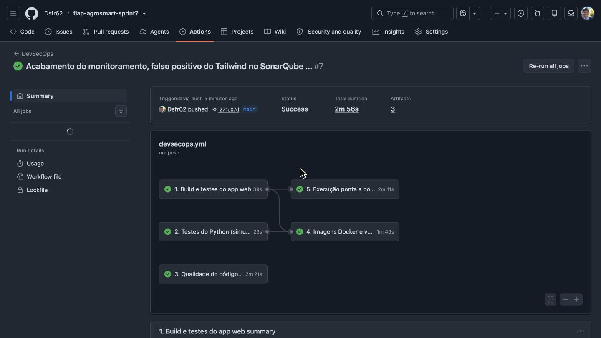
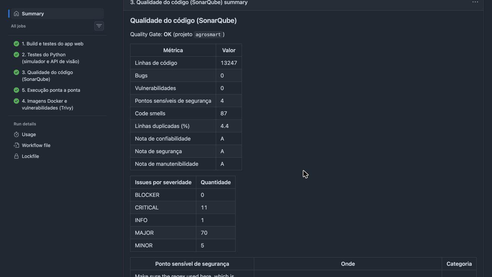
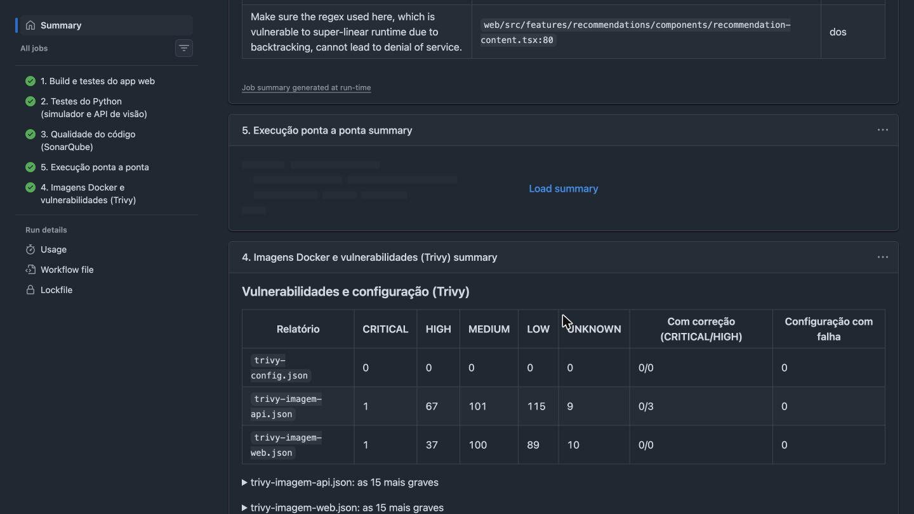
O monitoramento responde a três perguntas de quem opera: está tudo de pé? os dados continuam chegando? a automação está decidindo?
| Peça | O que mostra | Onde |
|---|---|---|
| Tela Monitoramento | estado de cada componente, indicadores e últimos eventos; atualiza a cada 10 s | /monitoramento |
GET /api/health | o estado em JSON: banco, broker, worker, leituras e decisões | app web |
GET /api/metrics | leituras, decisões por ação e por quem decidiu, taxa de plano B, alertas, contadores do worker | app web |
| Sinal de vida do worker | a cada 5 s: broker, mensagens, leituras, repetidas, descartadas, avaliações, fila, erros, tempo médio | data/worker-status.json |
| Log do worker | uma linha [monitor] por minuto e uma linha por decisão | data/demo-logs/worker.log |
| Healthcheck dos containers | a web chama o /api/health; a API, o /health; o Mosquitto responde a uma assinatura | Dockerfiles e compose |
| Pipeline | a cada push, sobe o sistema, guarda health e metrics e fotografa as telas | etapa 5 |
| Componente | Funcionando | Atenção | Fora do ar |
|---|---|---|---|
| Banco | responde a uma consulta | não responde (health devolve 503) | |
| Broker MQTT | aceita conexão em até 1 s | recusa ou não responde | |
| Worker | sinal há até 30 s e conectado | sinal entre 30 s e 2 min, ou sem broker | sem sinal há mais de 2 min |
| Leituras | a última há até 15 min | parou há mais de 15 min | banco fora |
| Decisões | a última há até 2 h | parou há mais de 2 h | banco fora |
O estado geral é ok com tudo verde, degradado quando algo pede atenção e fora só quando o banco cai: o healthcheck não derruba o app porque outra peça parou.
Como acompanhar: abrir /monitoramento; curl no /api/health e no /api/metrics; tail -f data/demo-logs/worker.log; a aba Actions do GitHub. Para testar o alarme: docker stop no Mosquitto; em uns 15 s a tela mostra o broker fora e o worker em atenção, e volta ao verde ao religar.
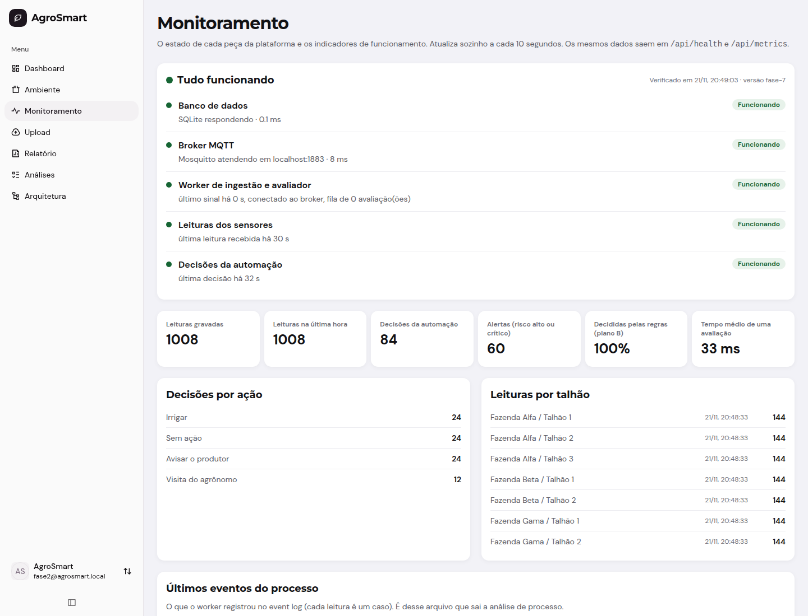
O /api/health da mesma execução:
{"status": "ok", "versao": "fase-7", "componentes": {
"banco": {"estado": "ok", "detalhe": "SQLite respondendo"},
"broker": {"estado": "ok", "detalhe": "Mosquitto atendendo em localhost:1883"},
"worker": {"estado": "ok", "detalhe": "último sinal há 3 s, conectado ao broker, fila de 0 avaliação(ões)"},
"leituras": {"estado": "ok", "detalhe": "última leitura recebida há 29 s"},
"decisoes": {"estado": "ok", "detalhe": "última decisão há 30 s"}}}
Prometheus e Grafana fariam o mesmo papel com mais recursos, mas não fazem parte do conteúdo da fase; os indicadores já saem em JSON, prontos para uma ferramenta dessas.
A plataforma registra por onde cada leitura de sensor passa. Esse registro é o event log: com ele, a mineração de processos (capítulo 9, pm4py) descobre o fluxo real do sistema, mede onde ele espera e mostra os caminhos diferentes. Números da execução 44963438354; os sensores são simulados, o tempo de cada passo é medido de verdade no worker.
O worker grava um evento a cada passo (data/event-log.jsonl); processo/exportar_event_log.py gera CSV e XES. Caso = uma leitura (talhão e instante); atividade = o passo; instante em milissegundos; recurso = quem executou (broker, banco, avaliador, regras, Jev, LLM).
case_id,atividade,instante,recurso,origem,fila,risco_geral,acao seed:alfa-talhao-1@2026-11-22T00:02:00.000Z,Mensagem recebida,2026-11-21 23:47:47.080,broker MQTT,ao_vivo,,, seed:alfa-talhao-1@2026-11-22T00:02:00.000Z,Avaliação enfileirada,2026-11-21 23:47:47.082,avaliador,ao_vivo,1,, seed:alfa-talhao-1@2026-11-22T00:02:00.000Z,Avaliação iniciada,2026-11-21 23:47:47.083,avaliador,,1,, seed:alfa-talhao-1@2026-11-22T00:02:00.000Z,Risco avaliado pelas regras (plano B),2026-11-21 23:47:47.203,regras,,,high, seed:alfa-talhao-1@2026-11-22T00:02:00.000Z,Decisão: avisar o produtor,2026-11-21 23:47:47.204,avaliador,,,,notify
Recorte de docs/fase-7/processo/exemplo-event-log.csv (colunas e instantes resumidos). O log completo sai no artefato execucao-ponta-a-ponta de cada execução.
2.352 eventos, 1.008 casos e 9 atividades. O Heuristics Miner desenhou o fluxo abaixo (o número em cada caixa é quantas vezes a atividade aconteceu). Na conformidade por token replay, fitness 1,0: 100% dos casos cabem no modelo.
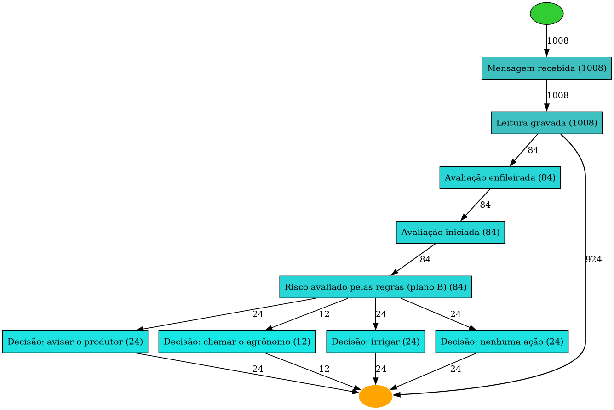
pm4py.discover_heuristics_net). A rede de Petri está em docs/fase-7/processo/rede-de-petri.png.| Casos | % | Mediana | Caminho |
|---|---|---|---|
| 924 | 91,7% | 1 ms | Mensagem recebida, Leitura gravada |
| 24 | 2,4% | 84 ms | (...) Avaliação enfileirada, Avaliação iniciada, Risco avaliado pelas regras, Decisão: avisar o produtor |
| 24 | 2,4% | 154 ms | (...) Risco avaliado pelas regras, Decisão: irrigar |
| 24 | 2,4% | 193 ms | (...) Risco avaliado pelas regras, Decisão: nenhuma ação |
| 12 | 1,2% | 60 ms | (...) Risco avaliado pelas regras, Decisão: chamar o agrônomo |
Só 84 leituras (8,3%) dispararam uma avaliação: cada talhão é avaliado uma vez por hora, com a janela das últimas 24 horas, e o histórico só é gravado.
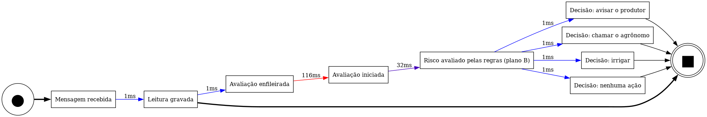
pm4py.discover_performance_dfg): a transição mais lenta em vermelho.| De | Para | Vezes | Média | p95 |
|---|---|---|---|---|
| Avaliação enfileirada | Avaliação iniciada | 84 | 117 ms | 302 ms |
| Avaliação iniciada | Risco avaliado pelas regras | 84 | 32 ms | 75 ms |
| Mensagem recebida | Leitura gravada | 1.008 | 1 ms | 1 ms |
O gargalo é a fila do avaliador, não a avaliação. Uma avaliação leva 32 ms, mas espera 117 ms na fila (3,6 vezes mais), com até 6 esperando juntas: as avaliações correm uma por vez, e os 7 talhões viram a hora no mesmo instante.
/api/metrics) diz quando o Jev está fora.Para conferir a leitura fora do pipeline, a demo rodou numa máquina do grupo (cenário misto, 48 horas de histórico e umas 6 horas ao vivo) e o event log passou pelos mesmos scripts: 3.006 eventos, 1.433 casos, as mesmas 5 variantes e fitness 1,0.
Gargalo: a espera cresce com a posição na fila. Os 7 talhões entram na fila em 18 ms, na virada da hora, e cada um espera os anteriores. É um gargalo de desenho, não de carga: o worker encadeia as avaliações numa fila de atendente único.
| Posição na fila | 1ª | 2ª | 3ª | 4ª | 5ª | 6ª | 7ª |
|---|---|---|---|---|---|---|---|
| Espera média (demo local) | 2 ms | 130 ms | 191 ms | 250 ms | 341 ms | 531 ms | 578 ms |
Teste com a OpenRouter lenta. O tempo de cada avaliação depende da rede: a chamada ao Jev espera até 10 s e, com risco alto, a recomendação da IA roda dentro da mesma avaliação e espera até mais 30 s. Para medir o pior caso, a demo rodou com OPENROUTER_BASE_URL apontando para um servidor local que aceita a conexão e não responde:
| OpenRouter respondendo | OpenRouter lenta | |
|---|---|---|
| Avaliação (risco baixo ou moderado / alto) | 85 ms | 10 s / 40 s |
| Primeira rodada dos 7 talhões | menos de 1,2 s | 3 min 40 s |
| Espera do 7º talhão | 578 ms | 210 s |
| Fila do avaliador | até 7 | 74 e subindo |
Nenhuma avaliação falhou (todas terminaram pelo plano B), então o problema não aparece nas variantes, só no tempo. E o monitoramento seguiu em "Tudo funcionando" com 74 avaliações na fila.
Variações. Entre as leituras ao vivo, 1 em cada 4 dispara avaliação nas duas execuções, porque a estação manda a cada 15 minutos e só a primeira da hora é avaliada. As 4 variantes de decisão só mudam no último passo, que leva 1 ms. "Nenhuma ação" parece a mais lenta porque cai nos talhões do fim da fila, cuja ordem é fixa, e não porque decidir seja mais difícil. Os desvios previstos no log não apareceram, então o fitness 1,0 mostra coerência, não robustez.
Melhorias, por prioridade:
Detalhe e tabelas completas em docs/fase-7/05-processo.md; prints do teste em docs/fase-7/prints/demo-local/.
Demonstração da plataforma, explicação do fluxo, análise do processo e funcionamento completo, seguindo o roteiro de docs/fase-7/06-roteiro-video.md.
O pitch, em vídeo de até 5 minutos com slides, apresenta o problema resolvido, a solução, o diferencial competitivo, o público-alvo e a proposta de valor.
| Integrante | Parte |
|---|---|
| Bruno Reis Lago | a plataforma da Sprint 6 (base deste trabalho) |
| Eduardo Sávio Fonseca Resende | pipeline DevSecOps, monitoramento, event log e pm4py, execução, arquitetura final e a montagem da entrega |
| Gustavo Vieira da Silva | vídeo final, vídeo pitch e slides |
| João Guilherme Mazur Ferreira | demonstração local pelo README |
| Marina da Conceição Pereira | análise do processo |